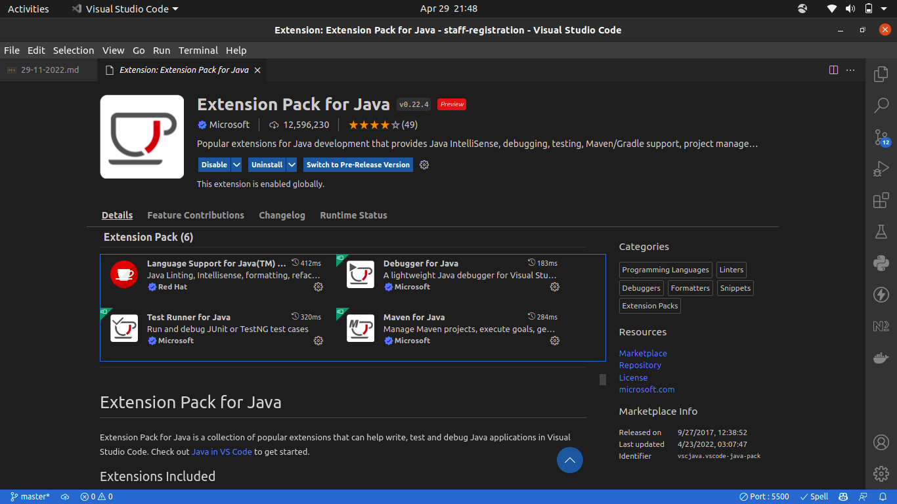
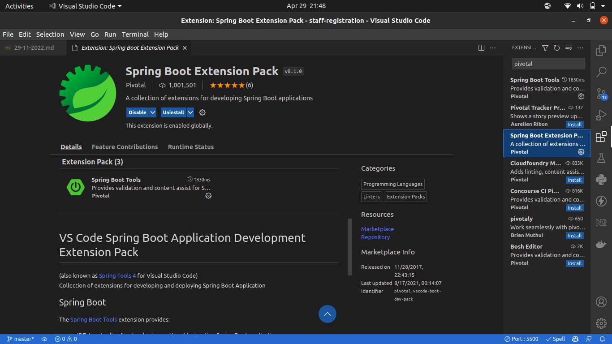
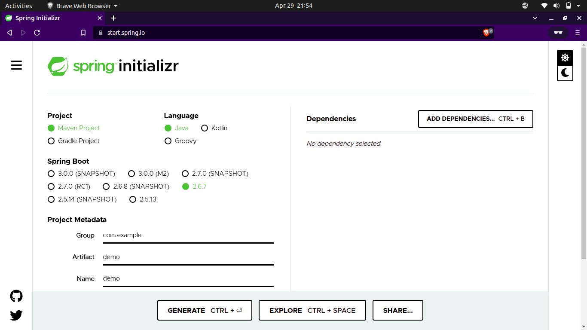
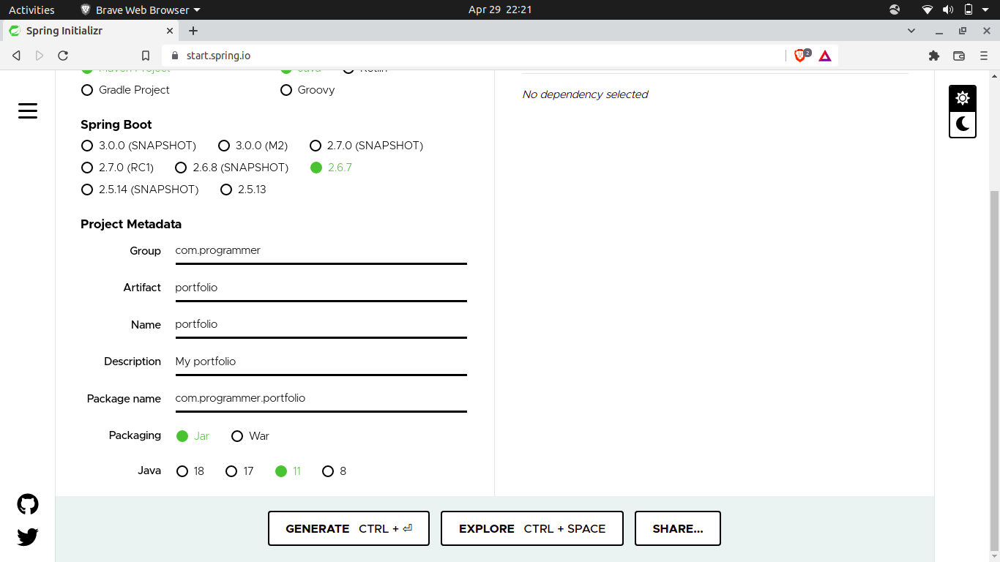
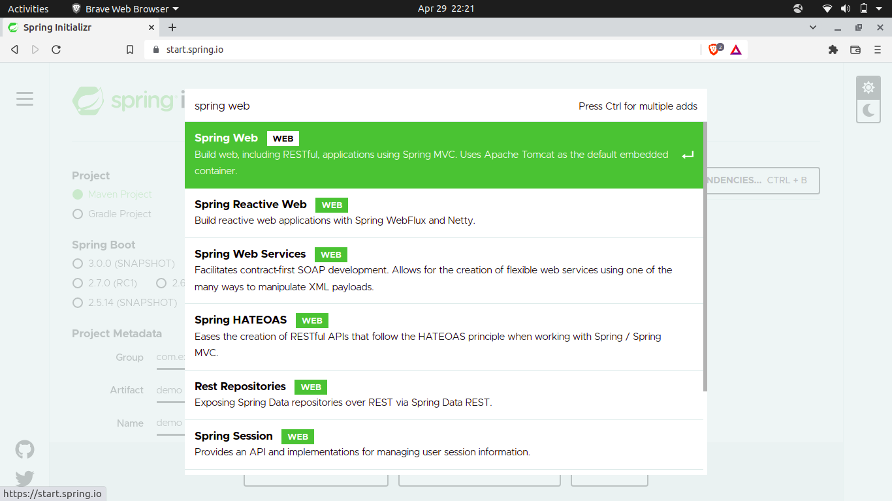
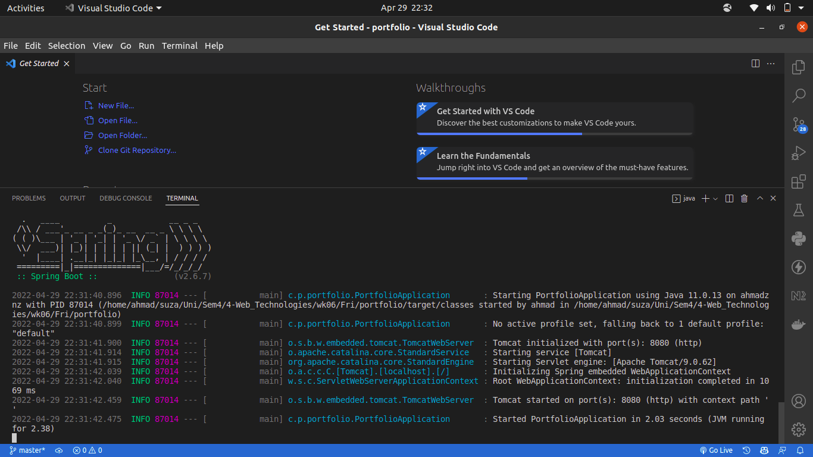
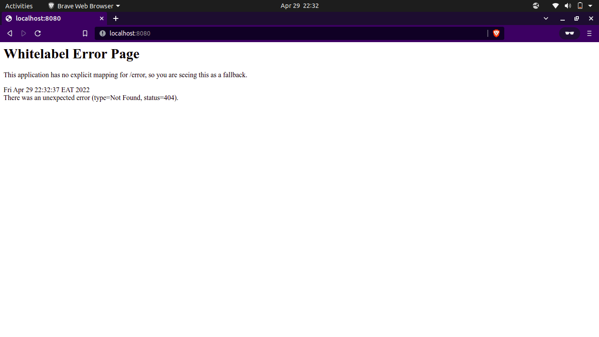

Getting started with Spring Boot
29-04-2022
Welcome to getting started with Spring Boot.
The only thing you need to know is Java.
Installations
- Install the Java Development Kit (JDK).
- Install maven (package manager)
Linux
$ sudo apt install maven
Windows
Download from maven.apache.org
-
Install Vscode extensions for developing with Spring
a. Install Extension Pack for Java 
b. Install Spring Boot Extension Pack 
Getting Started
You can visit https://youtu.be/eApc_BxEYsU for a video tutorial.
-
Visit start.spring.io 
-
Configure your project. We will configure a minimum configuration.
| Project | We will choose maven |
| Language | We will choose Java |
| Spring Boot | We will pick the default spring boot default |
| Project Metadata | |
| Group | reverse of domain. Example google.com will be written as com.google |
| Artifact | Your project name |
| Description | the description for your project |
We will leave other configurations as default.
|  |
|---|
| start.spring.io |
Add a dependency: We will add a spring web dependency
|  |
|---|
| Adding dependency |
And we are good to go. Click Generate.
-
A zip file will download. Extract the contents and open the folder in vscode.
-
Once in vscode, open new terminal. Then run the following commands.
$ mvn install
This command installs the required maven dependencies for your project.
$ mvn spring-boot:run
|  |
|---|
| Spring Boot is running |
If you saw the above screen that means Spring Boot is running and by default it runs at http://localhost:8080
- Open your browser and head over to http://localhost:8080
|  |
|---|
| Whitelabel error |
If you see the whitelabel error that means Spring Boot is running.
You've reached the end. Can't wait to see what you will do with Spring Boot.